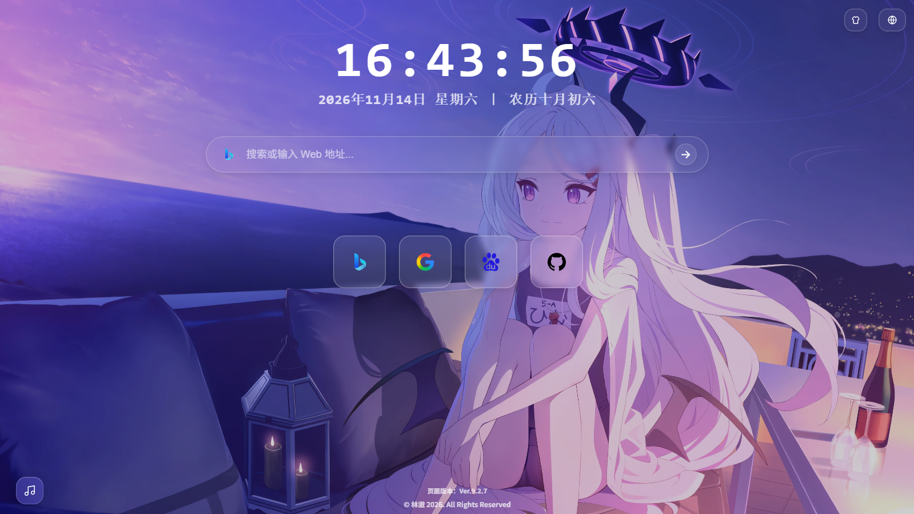

多搜索引擎
支持多种常用搜索引擎，按自己的习惯选择；输入网址也可以快速直达目标。
MeTab 是由林澈.LYC 打造的浏览器新标签页。以简约的界面、顺手的功能和舒适的视觉体验，让浏览从打开新标签的那一刻开始。

把常用能力放在恰到好处的位置。清晰、直接，不让多余的设计打断你的节奏。
支持多种常用搜索引擎，按自己的习惯选择；输入网址也可以快速直达目标。
清晰显示时间和日期，并提供农历信息，让新标签页不仅好看，也更实用。
用喜欢的图片或动态背景营造专属氛围，让每次打开浏览器都有自己的风格。
将常访问的网站放在触手可及的位置，减少重复操作，让浏览更顺畅。
在标签页中播放音乐，支持歌词、播放进度与音量记忆等实用功能。
围绕新标签页的核心场景设计，减少不必要的内容，让界面回归清爽。
MeTab 音乐播放器不仅服务于标签页，也可以扩展到其他静态网站。通过引用相关 JavaScript 与 CSS，即可集成播放器；还支持本地音频、歌单导入、歌词显示和系统媒体控制等功能。
MeTab 从浏览器新标签页这一日常入口出发，希望把搜索、时间、快捷访问与音乐等常用体验整合在一个简洁的页面中。它持续围绕实际使用需求进行调整，也将部分项目代码公开在 GitHub，方便了解与使用。